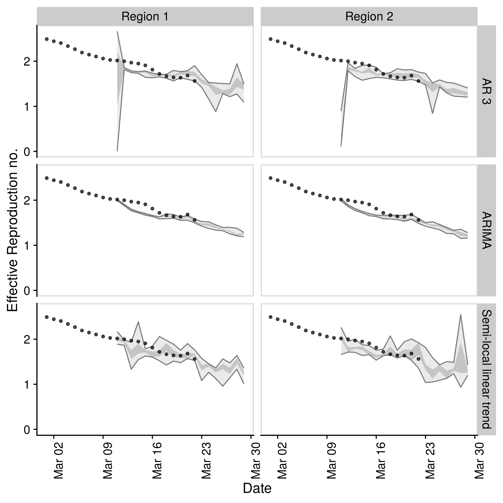

Warning: This package is a work in progress and is currently developed solely with the COVID-19 outbreak in mind. Breaking changes may occur and the authors cannot guarantee support.
Aim: To forecast the time-varying reproduction number and using this to forecast reported case counts.
Quick start
- Load packages (
bstsandfablefor models,ggplot2for plotting, andcowplotfor theming)
- Set up example data (using
EpiSoon::example_obs_rtsandEpiSoon::example_obs_casesas starting data sets). When generating timeseries withEpiNowuseget_timeseriesto extract the required data.
obs_rts <- EpiSoon::example_obs_rts %>%
dplyr::mutate(timeseries = "Region 1") %>%
dplyr::bind_rows(EpiSoon::example_obs_rts %>%
dplyr::mutate(timeseries = "Region 2"))
obs_cases <- EpiSoon::example_obs_cases %>%
dplyr::mutate(timeseries = "Region 1") %>%
dplyr::bind_rows(EpiSoon::example_obs_cases %>%
dplyr::mutate(timeseries = "Region 2"))- Define the list of models to be compared.
models <- list("AR 3" =
function(...) {EpiSoon::bsts_model(model =
function(ss, y){bsts::AddAr(ss, y = y, lags = 3)}, ...)},
"Semi-local linear trend" =
function(...) {EpiSoon::bsts_model(model =
function(ss, y){bsts::AddSemilocalLinearTrend(ss, y = y)}, ...)},
"ARIMA" =
function(...){EpiSoon::fable_model(model = fable::ARIMA(y ~ time), ...)})- Compare models across timeseries (change the
future::planto do this in parallel).
future::plan("sequential")
## Compare models
forecasts <- EpiSoon::compare_timeseries(obs_rts, obs_cases, models,
horizon = 7, samples = 10,
serial_interval = EpiSoon::example_serial_interval)
forecasts
#> $forecast_rts
#> # A tibble: 791 x 12
#> timeseries model forecast_date date horizon median mean sd bottom
#> <chr> <chr> <chr> <date> <int> <dbl> <dbl> <dbl> <dbl>
#> 1 Region 1 AR 3 2020-03-04 2020-03-05 1 2.12 2.00 0.599 0.386
#> 2 Region 1 AR 3 2020-03-04 2020-03-06 2 1.92 1.90 0.503 0.733
#> 3 Region 1 AR 3 2020-03-04 2020-03-07 3 1.74 1.67 0.722 0
#> 4 Region 1 AR 3 2020-03-04 2020-03-08 4 1.63 1.57 0.735 0
#> 5 Region 1 AR 3 2020-03-04 2020-03-09 5 1.49 1.59 0.620 0.871
#> 6 Region 1 AR 3 2020-03-04 2020-03-10 6 1.44 1.42 0.881 0
#> 7 Region 1 AR 3 2020-03-04 2020-03-11 7 1.41 1.38 0.879 0
#> 8 Region 1 AR 3 2020-03-05 2020-03-06 1 2.20 2.20 0.00600 2.19
#> 9 Region 1 AR 3 2020-03-05 2020-03-07 2 2.13 2.13 0.0145 2.12
#> 10 Region 1 AR 3 2020-03-05 2020-03-08 3 2.07 2.07 0.0137 2.05
#> # … with 781 more rows, and 3 more variables: lower <dbl>, upper <dbl>,
#> # top <dbl>
#>
#> $rt_scores
#> # A tibble: 629 x 10
#> timeseries model forecast_date date horizon dss crps logs bias
#> <chr> <chr> <chr> <date> <int> <dbl> <dbl> <dbl> <dbl>
#> 1 Region 1 AR 3 2020-03-04 2020-03-05 1 -0.914 0.0985 -0.312 0.4
#> 2 Region 1 AR 3 2020-03-04 2020-03-06 2 -1.11 0.148 0.148 0.4
#> 3 Region 1 AR 3 2020-03-04 2020-03-07 3 -0.265 0.223 0.558 0.4
#> 4 Region 1 AR 3 2020-03-04 2020-03-08 4 -0.143 0.259 0.736 0.4
#> 5 Region 1 AR 3 2020-03-04 2020-03-09 5 -0.413 0.297 0.822 0.4
#> 6 Region 1 AR 3 2020-03-04 2020-03-10 6 0.172 0.340 1.08 0.4
#> 7 Region 1 AR 3 2020-03-04 2020-03-11 7 0.217 0.347 1.09 0.4
#> 8 Region 1 AR 3 2020-03-05 2020-03-06 1 -6.97 0.00727 -3.21 1
#> 9 Region 1 AR 3 2020-03-05 2020-03-07 2 -7.38 0.0100 -2.70 0.100
#> 10 Region 1 AR 3 2020-03-05 2020-03-08 3 -1.37 0.0278 -0.281 0
#> # … with 619 more rows, and 1 more variable: sharpness <dbl>
#>
#> $forecast_cases
#> # A tibble: 629 x 12
#> timeseries model forecast_date date horizon median mean sd bottom
#> <chr> <chr> <chr> <date> <int> <dbl> <dbl> <dbl> <dbl>
#> 1 Region 1 AR 3 2020-03-04 2020-03-05 1 57 52.3 15.4 11
#> 2 Region 1 AR 3 2020-03-04 2020-03-06 2 58 57.9 17.1 22
#> 3 Region 1 AR 3 2020-03-04 2020-03-07 3 70 63.7 28.5 0
#> 4 Region 1 AR 3 2020-03-04 2020-03-08 4 62.5 68.6 36.6 0
#> 5 Region 1 AR 3 2020-03-04 2020-03-09 5 64.5 74.8 41.3 28
#> 6 Region 1 AR 3 2020-03-04 2020-03-10 6 71 80.2 58.4 0
#> 7 Region 1 AR 3 2020-03-04 2020-03-11 7 81.5 91.8 69.5 0
#> 8 Region 1 AR 3 2020-03-05 2020-03-06 1 65 66.6 7.63 57
#> 9 Region 1 AR 3 2020-03-05 2020-03-07 2 83 78.3 9.52 59
#> 10 Region 1 AR 3 2020-03-05 2020-03-08 3 89.5 90.1 8.24 76
#> # … with 619 more rows, and 3 more variables: lower <dbl>, upper <dbl>,
#> # top <dbl>
#>
#> $case_scores
#> # A tibble: 629 x 11
#> timeseries model sample forecast_date date horizon dss crps logs
#> <chr> <chr> <chr> <chr> <date> <int> <dbl> <dbl> <dbl>
#> 1 Region 1 AR 3 1 2020-03-04 2020-03-05 1 5.90 5.07 3.78
#> 2 Region 1 AR 3 1 2020-03-04 2020-03-06 2 6.44 8.47 4.09
#> 3 Region 1 AR 3 1 2020-03-04 2020-03-07 3 7.40 12.8 4.40
#> 4 Region 1 AR 3 1 2020-03-04 2020-03-08 4 8.02 18.8 4.88
#> 5 Region 1 AR 3 1 2020-03-04 2020-03-09 5 8.44 23.6 5.07
#> 6 Region 1 AR 3 1 2020-03-04 2020-03-10 6 9.25 34.7 5.45
#> 7 Region 1 AR 3 1 2020-03-04 2020-03-11 7 9.68 41.5 5.59
#> 8 Region 1 AR 3 1 2020-03-05 2020-03-06 1 4.74 4.38 3.57
#> 9 Region 1 AR 3 1 2020-03-05 2020-03-07 2 5.55 4.89 3.42
#> 10 Region 1 AR 3 1 2020-03-05 2020-03-08 3 6.43 7.49 3.76
#> # … with 619 more rows, and 2 more variables: bias <dbl>, sharpness <dbl>- Plot an evaluation of Rt forecasts using iterative fitting.
EpiSoon::plot_forecast_evaluation(forecasts$forecast_rts, obs_rts, c(7)) +
ggplot2::facet_grid(model ~ timeseries) +
cowplot::panel_border()
- Plot an evaluation of case forecasts using iterative fitting
EpiSoon::plot_forecast_evaluation(forecasts$forecast_cases, obs_cases, c(7)) +
ggplot2::facet_grid(model ~ timeseries, scales = "free") +
cowplot::panel_border()
- Summarise the forecasts by model scored against observed cases
EpiSoon::summarise_scores(forecasts$case_scores)
#> # A tibble: 15 x 9
#> score model bottom lower median mean upper top sd
#> <chr> <chr> <dbl> <dbl> <dbl> <dbl> <dbl> <dbl> <dbl>
#> 1 bias AR 3 0 0 0.100 0.256 0.4 1 0.354
#> 2 bias ARIMA 0 0 0.0500 0.236 0.4 1 0.342
#> 3 bias Semi-local linear t… 0 0 0.100 0.293 0.6 1 0.354
#> 4 crps AR 3 4.08 10.9 19.7 35.1 37.3 159. 39.9
#> 5 crps ARIMA 3.06 9.12 21.5 35.2 39.4 157. 39.7
#> 6 crps Semi-local linear t… 2.95 9.01 20.0 32.8 35.7 170. 39.9
#> 7 dss AR 3 5.02 6.89 9.48 15.8 16.6 69.1 17.3
#> 8 dss ARIMA 4.57 6.57 9.57 16.9 17.0 78.5 19.9
#> 9 dss Semi-local linear t… 4.53 6.70 8.57 13.3 13.0 64.5 15.1
#> 10 logs AR 3 3.52 4.52 5.22 14.4 9.26 62.7 44.5
#> 11 logs ARIMA 3.35 4.24 5.25 12.4 9.29 76.9 19.1
#> 12 logs Semi-local linear t… 3.20 4.28 5.06 9.59 6.67 60.1 15.7
#> 13 sharpness AR 3 4.60 10.4 15.6 18.8 23.7 51.0 13.1
#> 14 sharpness ARIMA 4.45 9.64 14.1 15.6 19.8 33.2 7.78
#> 15 sharpness Semi-local linear t… 5.36 11.1 16.3 20.4 24.5 55.3 15.1Docker
This package was developed in a docker container based on the rocker/geospatial docker image.
To build the docker image run (from the EpiSoon directory):
To run the docker image run:
The rstudio client can be found on port :8787 at your local machines ip. The default username:password is epinow:epinow, set the user with -e USER=username, and the password with - e PASSWORD=newpasswordhere. The default is to save the analysis files into the user directory.
To mount a folder (from your current working directory - here assumed to be tmp) in the docker container to your local system use the following in the above docker run command (as given mounts the whole episoon directory to tmp).
To access the command line run the following: